每一处解释，都能找到来处。
作业要求PDF定义题目；答案报告记录已做实验；SQL是当前原始文件；本站文字是对照翻译、教学解释与明确标注的建议。
版本选择：看内容和证据，不按修改时间
| 来源 | 采用方式 | 原因 / 影响 |
|---|---|---|
| 作业要求a2-2026-v1.pdf | 题号、英文、页码与覆盖基准 | PDF内部Assignment Version1.0，文件名v1；不自行改成新版本。 |
| A2根20份SQL | 完整代码主线 | 根SQL.zip逐文件hash一致；395物理行重新对齐。 |
| 原生截图更新版45页PDF | 主要答案证据 | 53嵌图；保留原生截断和独立重放说明；原生Q4更完整。 |
| 补齐版47页PDF | 下载保留，供版本比较 | 较多重放输出；不是当前所有原生实验的同次结果。 |
| completed36页PDF与日志 | 单独归档 | Q4采用VEH-0001、另一死锁受害者；不能混配根代码。 |
| Study旧专项与逐行解释 | 核对后复用概念、排版和原题提取 | 旧SQL265行；当前395行，Q4有实质变化，重新写行号与讲解。 |
SHA-256清单见data/materials.json与data/audit-versions.json；报告详细审计见下方链接。所有导入文件均复制到此项目，无需原A2或Study文件夹运行。
原内容保留；问题与建议另外说明
| 核对问题 | 原内容/版本 | 本站处理 |
|---|---|---|
| 死锁受害会话不同 | completed/旧Study：T1失败，T2+20；原生：RIGHT/T2失败 | 主线按原生最终149110/122160；旧149120/122170仅在独立下载中。 |
| D2强制bitmap不一定更慢 | 原生D2 22.959ms < D1 24.116ms | 保留实测，说明成本更高不等于单次时间必更长。 |
| Q1.3计划截断/不同阶段 | 原生长条件截断，原生30276条，早期重放30275条 | 两套计划分别标明；不给出受控倍速比。 |
| 原题“普通读无锁”的简化 | PDF p7背景措辞 | 补充普通SELECT兼容ACCESS SHARE表锁；没有预留车辆的冲突行锁。 |
| 赞助环/零次类别/邮箱格式 | 约束没有防环或邮箱格式CHECK | 逐题注明边界；不伪造课程数据有这些错误。 |
| 固定实验车辆与SAVEPOINT | 根Q4固定VEH-0004，建立保存点但未恢复 | 说明重跑可能无可用结果；异常后仍按整事务ROLLBACK。 |
| 图片可读性 | 原生长过滤右端截断，小结果裁图像素少 | 保留原图和报告页；缺字不猜，重放仅补充语义结构。 |
公共要求、完整原页与提交范围
原题PDF p1–3给出FleetDB业务、全部表、触发器规则与初始化方式；p7给出事务快照背景；p9列20份SQL，四道解释题不单交SQL；p10要求按题号在新初始化库通过psql的\i重现，Q4人工切换连接。
原题p10说明报告应含全部回答、所需SQL及执行输出截图；普通结果超过20行可展示前10末10，不跨行拆元组，计划须完整。明确评分为功能/理解/解释28分与展示2分。本站额外自测、口头稿、学习检查点是学习建议，不是新增评分项。
本地保留完整原题，以下12页可直接阅读。原图含ER图、表格、代码和评分清单，未用文字提取猜测图示。

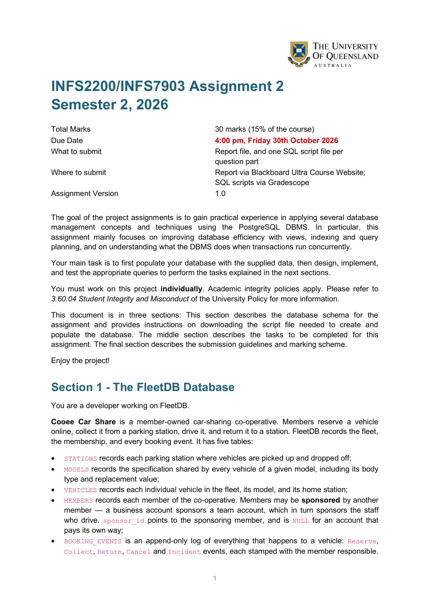
作业要求 p1
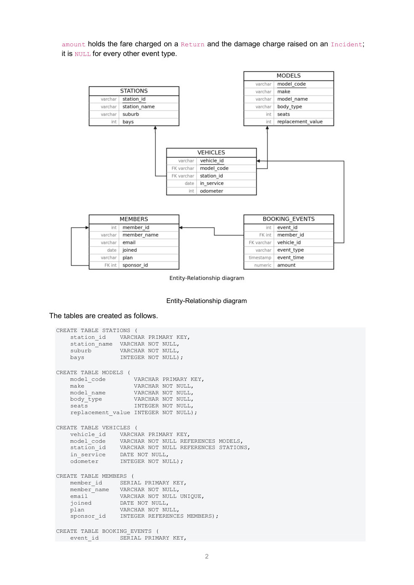
作业要求 p2
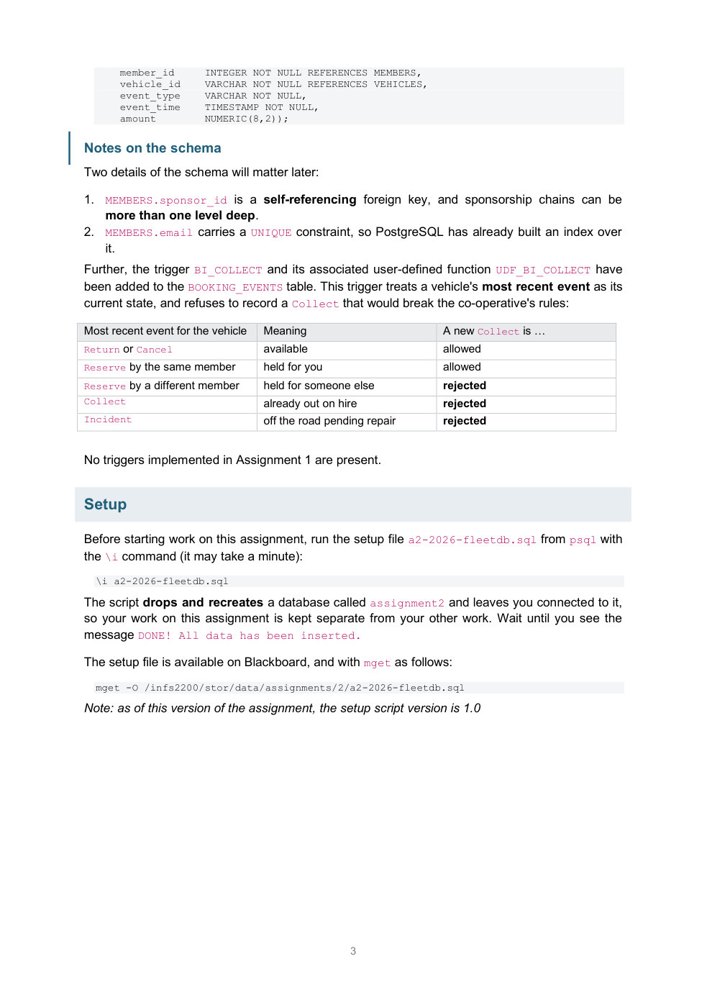
作业要求 p3
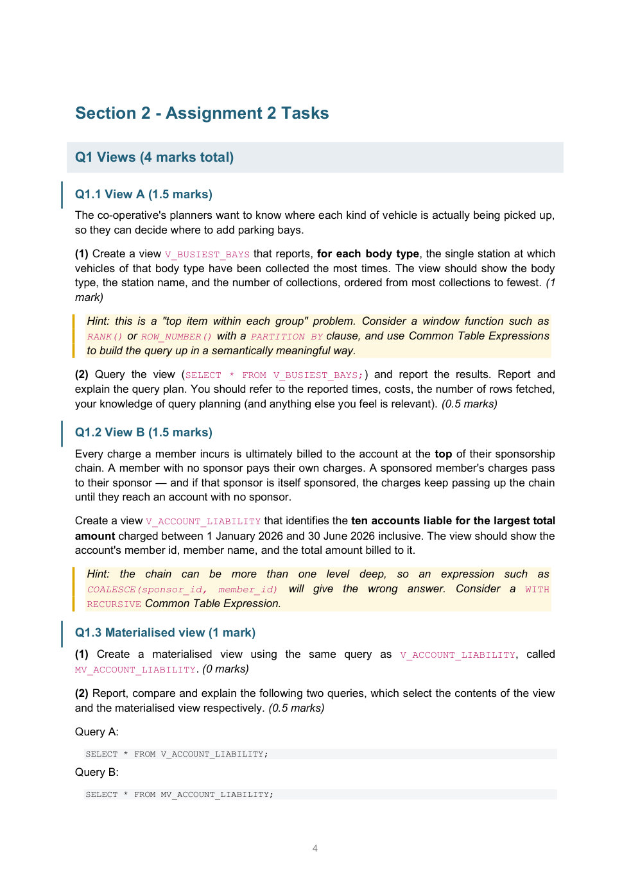
作业要求 p4
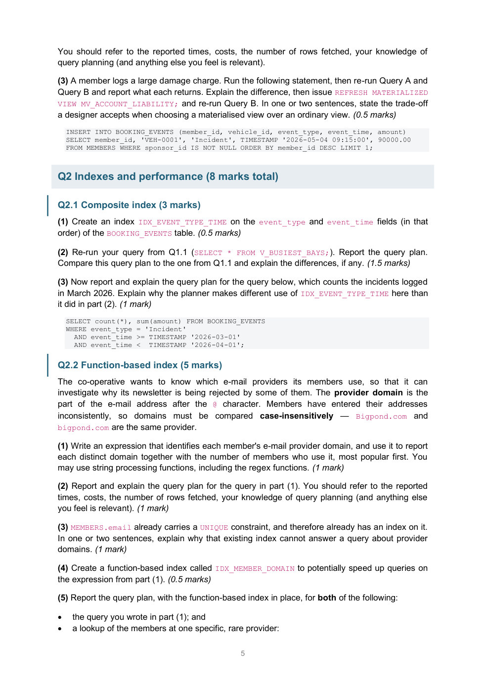
作业要求 p5
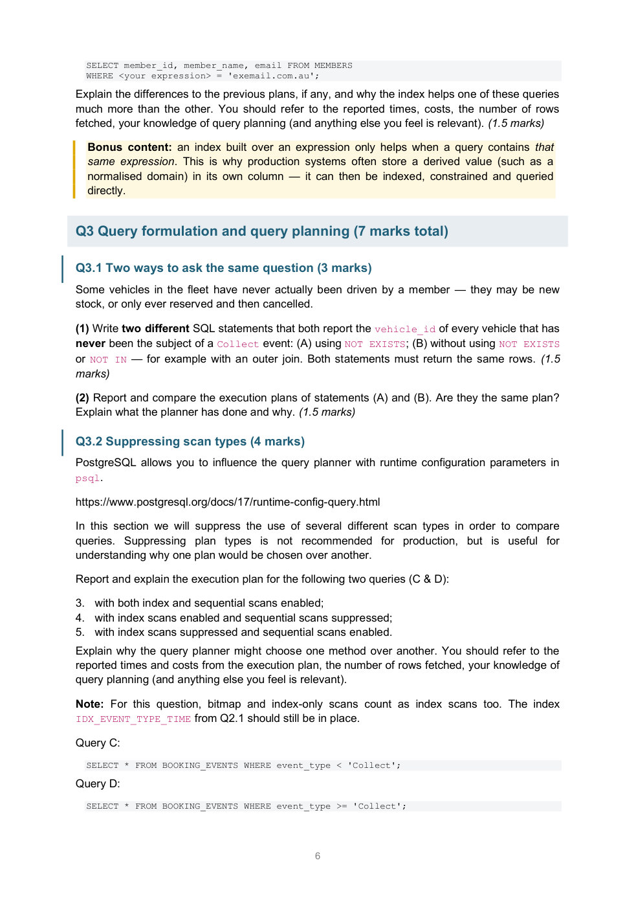
作业要求 p6
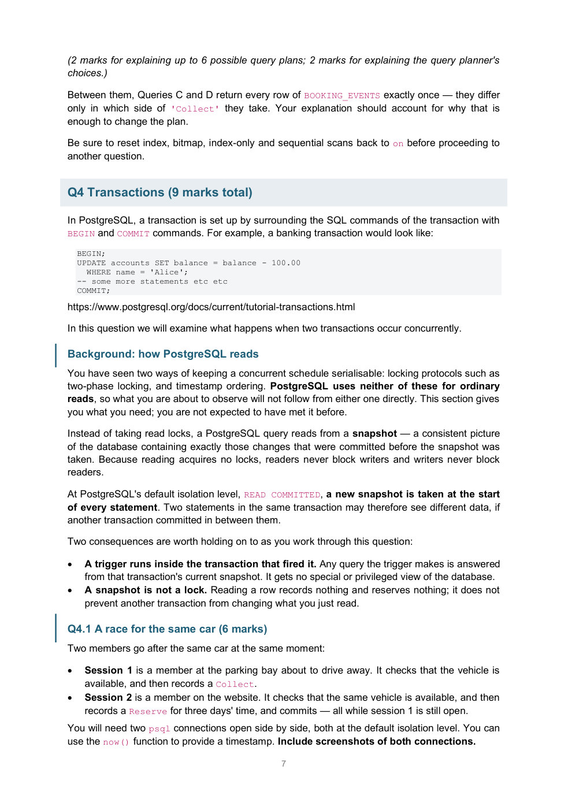
作业要求 p7
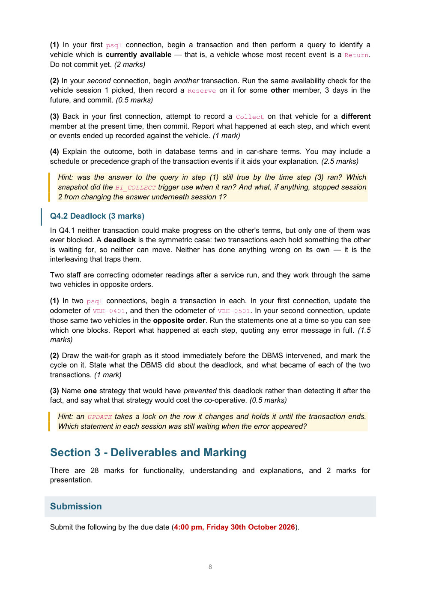
作业要求 p8
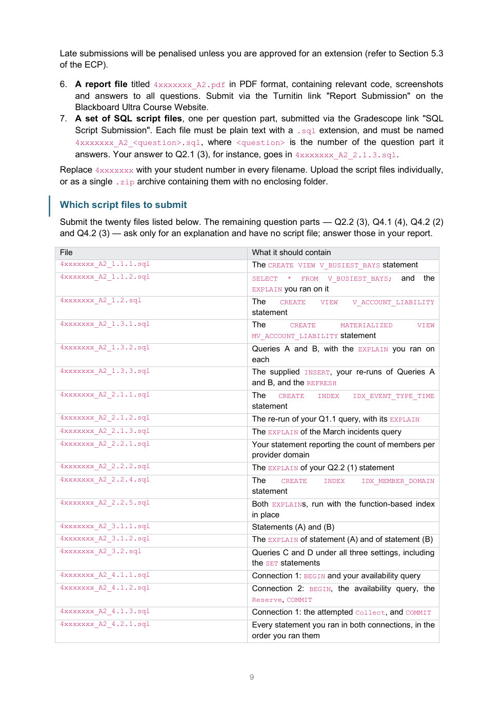
作业要求 p9
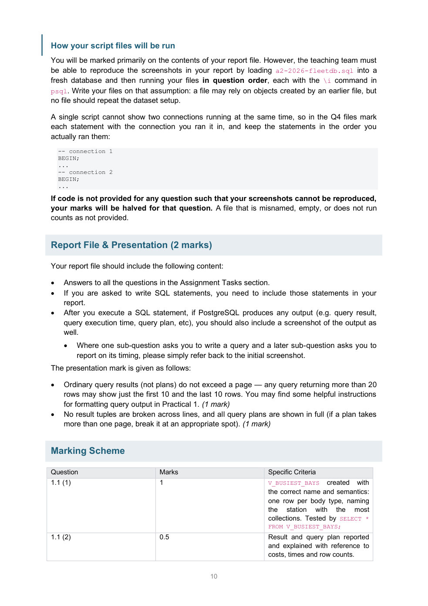
作业要求 p10
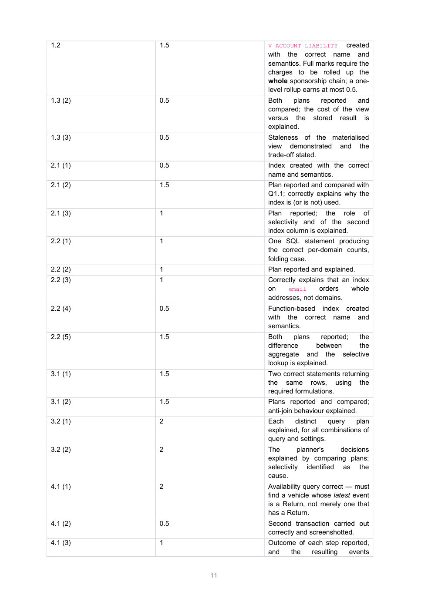
作业要求 p11
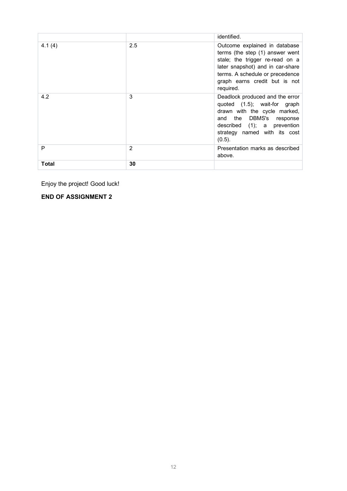
作业要求 p12完整公共背景英文原文（PDF p1–3、7、9–12）
作业要求PDF p1
1 INFS2200/INFS7903 Assignment 2 Semester 2, 2026 Total Marks 30 marks (15% of the course) Due Date 4:00 pm, Friday 30th October 2026 What to submit Report file, and one SQL script file per question part Where to submit Report via Blackboard Ultra Course Website; SQL scripts via Gradescope Assignment Version 1.0 The goal of the project assignments is to gain practical experience in applying several database management concepts and techniques using the PostgreSQL DBMS. In particular, this assignment mainly focuses on improving database efficiency with views, indexing and query planning, and on understanding what the DBMS does when transactions run concurrently. Your main task is to first populate your database with the supplied data, then design, implement, and test the appropriate queries to perform the tasks explained in the next sections. You must work on this project individually. Academic integrity policies apply. Please refer to 3.60.04 Student Integrity and Misconduct of the University Policy for more information. This document is in three sections: This section describes the database schema for the assignment and provides instructions on downloading the script file needed to create and populate the database. The middle section describes the tasks to be completed for this assignment. The final section describes the submission guidelines and marking scheme. Enjoy the project! Section 1 - The FleetDB Database You are a developer working on FleetDB. Cooee Car Share is a member-owned car-sharing co-operative. Members reserve a vehicle online, collect it from a parking station, drive it, and return it to a station. FleetDB records the fleet, the membership, and every booking event. It has five tables: • STATIONS records each parking station where vehicles are picked up and dropped off; • MODELS records the specification shared by every vehicle of a given model, including its body type and replacement value; • VEHICLES records each individual vehicle in the fleet, its model, and its home station; • MEMBERS records each member of the co-operative. Members may be sponsored by another member — a business account sponsors a team account, which in turn sponsors the staff who drive. sponsor_id points to the sponsoring member, and is NULL for an account that pays its own way; • BOOKING_EVENTS is an append-only log of everything that happens to a vehicle: Reserve, Collect, Return, Cancel and Incident events, each stamped with the member responsible.
作业要求PDF p2
2
amount holds the fare charged on a Return and the damage charge raised on an Incident;
it is NULL for every other event type.
Entity-Relationship diagram
The tables are created as follows.
CREATE TABLE STATIONS (
station_id VARCHAR PRIMARY KEY,
station_name VARCHAR NOT NULL,
suburb VARCHAR NOT NULL,
bays INTEGER NOT NULL);
CREATE TABLE MODELS (
model_code VARCHAR PRIMARY KEY,
make VARCHAR NOT NULL,
model_name VARCHAR NOT NULL,
body_type VARCHAR NOT NULL,
seats INTEGER NOT NULL,
replacement_value INTEGER NOT NULL);
CREATE TABLE VEHICLES (
vehicle_id VARCHAR PRIMARY KEY,
model_code VARCHAR NOT NULL REFERENCES MODELS,
station_id VARCHAR NOT NULL REFERENCES STATIONS,
in_service DATE NOT NULL,
odometer INTEGER NOT NULL);
CREATE TABLE MEMBERS (
member_id SERIAL PRIMARY KEY,
member_name VARCHAR NOT NULL,
email VARCHAR NOT NULL UNIQUE,
joined DATE NOT NULL,
plan VARCHAR NOT NULL,
sponsor_id INTEGER REFERENCES MEMBERS);
CREATE TABLE BOOKING_EVENTS (
event_id SERIAL PRIMARY KEY,
作业要求PDF p3
3
member_id INTEGER NOT NULL REFERENCES MEMBERS,
vehicle_id VARCHAR NOT NULL REFERENCES VEHICLES,
event_type VARCHAR NOT NULL,
event_time TIMESTAMP NOT NULL,
amount NUMERIC(8,2));
Notes on the schema
Two details of the schema will matter later:
1. MEMBERS.sponsor_id is a self-referencing foreign key, and sponsorship chains can be
more than one level deep.
2. MEMBERS.email carries a UNIQUE constraint, so PostgreSQL has already built an index over
it.
Further, the trigger BI_COLLECT and its associated user-defined function UDF_BI_COLLECT have
been added to the BOOKING_EVENTS table. This trigger treats a vehicle's most recent event as its
current state, and refuses to record a Collect that would break the co-operative's rules:
Most recent event for the vehicle
Meaning
A new Collect is …
Return or Cancel
available
allowed
Reserve by the same member
held for you
allowed
Reserve by a different member
held for someone else
rejected
Collect
already out on hire
rejected
Incident
off the road pending repair
rejected
No triggers implemented in Assignment 1 are present.
Setup
Before starting work on this assignment, run the setup file a2-2026-fleetdb.sql from psql with
the \i command (it may take a minute):
\i a2-2026-fleetdb.sql
The script drops and recreates a database called assignment2 and leaves you connected to it,
so your work on this assignment is kept separate from your other work. Wait until you see the
message DONE! All data has been inserted.
The setup file is available on Blackboard, and with mget as follows:
mget -O /infs2200/stor/data/assignments/2/a2-2026-fleetdb.sql
Note: as of this version of the assignment, the setup script version is 1.0
作业要求PDF p7
7 (2 marks for explaining up to 6 possible query plans; 2 marks for explaining the query planner's choices.) Between them, Queries C and D return every row of BOOKING_EVENTS exactly once — they differ only in which side of 'Collect' they take. Your explanation should account for why that is enough to change the plan. Be sure to reset index, bitmap, index-only and sequential scans back to on before proceeding to another question. Q4 Transactions (9 marks total) In PostgreSQL, a transaction is set up by surrounding the SQL commands of the transaction with BEGIN and COMMIT commands. For example, a banking transaction would look like: BEGIN; UPDATE accounts SET balance = balance - 100.00 WHERE name = 'Alice'; -- some more statements etc etc COMMIT; https://www.postgresql.org/docs/current/tutorial-transactions.html In this question we will examine what happens when two transactions occur concurrently. Background: how PostgreSQL reads You have seen two ways of keeping a concurrent schedule serialisable: locking protocols such as two-phase locking, and timestamp ordering. PostgreSQL uses neither of these for ordinary reads, so what you are about to observe will not follow from either one directly. This section gives you what you need; you are not expected to have met it before. Instead of taking read locks, a PostgreSQL query reads from a snapshot — a consistent picture of the database containing exactly those changes that were committed before the snapshot was taken. Because reading acquires no locks, readers never block writers and writers never block readers. At PostgreSQL's default isolation level, READ COMMITTED, a new snapshot is taken at the start of every statement. Two statements in the same transaction may therefore see different data, if another transaction committed in between them. Two consequences are worth holding on to as you work through this question: • A trigger runs inside the transaction that fired it. Any query the trigger makes is answered from that transaction's current snapshot. It gets no special or privileged view of the database. • A snapshot is not a lock. Reading a row records nothing and reserves nothing; it does not prevent another transaction from changing what you just read. Q4.1 A race for the same car (6 marks) Two members go after the same car at the same moment: • Session 1 is a member at the parking bay about to drive away. It checks that the vehicle is available, and then records a Collect. • Session 2 is a member on the website. It checks that the same vehicle is available, and then records a Reserve for three days' time, and commits — all while session 1 is still open. You will need two psql connections open side by side, both at the default isolation level. You can use the now() function to provide a timestamp. Include screenshots of both connections.
作业要求PDF p9
9 Late submissions will be penalised unless you are approved for an extension (refer to Section 5.3 of the ECP). 6. A report file titled 4xxxxxxx_A2.pdf in PDF format, containing relevant code, screenshots and answers to all questions. Submit via the Turnitin link "Report Submission" on the Blackboard Ultra Course Website. 7. A set of SQL script files, one per question part, submitted via the Gradescope link "SQL Script Submission". Each file must be plain text with a .sql extension, and must be named 4xxxxxxx_A2_<question>.sql, where <question> is the number of the question part it answers. Your answer to Q2.1 (3), for instance, goes in 4xxxxxxx_A2_2.1.3.sql. Replace 4xxxxxxx with your student number in every filename. Upload the script files individually, or as a single .zip archive containing them with no enclosing folder. Which script files to submit Submit the twenty files listed below. The remaining question parts — Q2.2 (3), Q4.1 (4), Q4.2 (2) and Q4.2 (3) — ask only for an explanation and have no script file; answer those in your report. File What it should contain 4xxxxxxx_A2_1.1.1.sql The CREATE VIEW V_BUSIEST_BAYS statement 4xxxxxxx_A2_1.1.2.sql SELECT * FROM V_BUSIEST_BAYS; and the EXPLAIN you ran on it 4xxxxxxx_A2_1.2.sql The CREATE VIEW V_ACCOUNT_LIABILITY statement 4xxxxxxx_A2_1.3.1.sql The CREATE MATERIALIZED VIEW MV_ACCOUNT_LIABILITY statement 4xxxxxxx_A2_1.3.2.sql Queries A and B, with the EXPLAIN you ran on each 4xxxxxxx_A2_1.3.3.sql The supplied INSERT, your re-runs of Queries A and B, and the REFRESH 4xxxxxxx_A2_2.1.1.sql The CREATE INDEX IDX_EVENT_TYPE_TIME statement 4xxxxxxx_A2_2.1.2.sql The re-run of your Q1.1 query, with its EXPLAIN 4xxxxxxx_A2_2.1.3.sql The EXPLAIN of the March incidents query 4xxxxxxx_A2_2.2.1.sql Your statement reporting the count of members per provider domain 4xxxxxxx_A2_2.2.2.sql The EXPLAIN of your Q2.2 (1) statement 4xxxxxxx_A2_2.2.4.sql The CREATE INDEX IDX_MEMBER_DOMAIN statement 4xxxxxxx_A2_2.2.5.sql Both EXPLAINs, run with the function-based index in place 4xxxxxxx_A2_3.1.1.sql Statements (A) and (B) 4xxxxxxx_A2_3.1.2.sql The EXPLAIN of statement (A) and of statement (B) 4xxxxxxx_A2_3.2.sql Queries C and D under all three settings, including the SET statements 4xxxxxxx_A2_4.1.1.sql Connection 1: BEGIN and your availability query 4xxxxxxx_A2_4.1.2.sql Connection 2: BEGIN, the availability query, the Reserve, COMMIT 4xxxxxxx_A2_4.1.3.sql Connection 1: the attempted Collect, and COMMIT 4xxxxxxx_A2_4.2.1.sql Every statement you ran in both connections, in the order you ran them
作业要求PDF p10
10 How your script files will be run You will be marked primarily on the contents of your report file. However, the teaching team must be able to reproduce the screenshots in your report by loading a2-2026-fleetdb.sql into a fresh database and then running your files in question order, each with the \i command in psql. Write your files on that assumption: a file may rely on objects created by an earlier file, but no file should repeat the dataset setup. A single script cannot show two connections running at the same time, so in the Q4 files mark each statement with the connection you ran it in, and keep the statements in the order you actually ran them: -- connection 1 BEGIN; ... -- connection 2 BEGIN; ... If code is not provided for any question such that your screenshots cannot be reproduced, your marks will be halved for that question. A file that is misnamed, empty, or does not run counts as not provided. Report File & Presentation (2 marks) Your report file should include the following content: • Answers to all the questions in the Assignment Tasks section. • If you are asked to write SQL statements, you need to include those statements in your report. • After you execute a SQL statement, if PostgreSQL produces any output (e.g. query result, query execution time, query plan, etc), you should also include a screenshot of the output as well. • Where one sub-question asks you to write a query and a later sub-question asks you to report on its timing, please simply refer back to the initial screenshot. The presentation mark is given as follows: • Ordinary query results (not plans) do not exceed a page — any query returning more than 20 rows may show just the first 10 and the last 10 rows. You may find some helpful instructions for formatting query output in Practical 1. (1 mark) • No result tuples are broken across lines, and all query plans are shown in full (if a plan takes more than one page, break it at an appropriate spot). (1 mark) Marking Scheme Question Marks Specific Criteria 1.1 (1) 1 V_BUSIEST_BAYS created with the correct name and semantics: one row per body type, naming the station with the most collections. Tested by SELECT * FROM V_BUSIEST_BAYS; 1.1 (2) 0.5 Result and query plan reported and explained with reference to costs, times and row counts.
作业要求PDF p11
11 1.2 1.5 V_ACCOUNT_LIABILITY created with the correct name and semantics. Full marks require the charges to be rolled up the whole sponsorship chain; a one- level rollup earns at most 0.5. 1.3 (2) 0.5 Both plans reported and compared; the cost of the view versus the stored result is explained. 1.3 (3) 0.5 Staleness of the materialised view demonstrated and the trade-off stated. 2.1 (1) 0.5 Index created with the correct name and semantics. 2.1 (2) 1.5 Plan reported and compared with Q1.1; correctly explains why the index is (or is not) used. 2.1 (3) 1 Plan reported; the role of selectivity and of the second index column is explained. 2.2 (1) 1 One SQL statement producing the correct per-domain counts, folding case. 2.2 (2) 1 Plan reported and explained. 2.2 (3) 1 Correctly explains that an index on email orders whole addresses, not domains. 2.2 (4) 0.5 Function-based index created with the correct name and semantics. 2.2 (5) 1.5 Both plans reported; the difference between the aggregate and the selective lookup is explained. 3.1 (1) 1.5 Two correct statements returning the same rows, using the required formulations. 3.1 (2) 1.5 Plans reported and compared; anti-join behaviour explained. 3.2 (1) 2 Each distinct query plan explained, for all combinations of query and settings. 3.2 (2) 2 The planner's decisions explained by comparing plans; selectivity identified as the cause. 4.1 (1) 2 Availability query correct — must find a vehicle whose latest event is a Return, not merely one that has a Return. 4.1 (2) 0.5 Second transaction carried out correctly and screenshotted. 4.1 (3) 1 Outcome of each step reported, and the resulting events
作业要求PDF p12
12 identified. 4.1 (4) 2.5 Outcome explained in database terms (the step (1) answer went stale; the trigger re-read on a later snapshot) and in car-share terms. A schedule or precedence graph earns credit but is not required. 4.2 3 Deadlock produced and the error quoted (1.5); wait-for graph drawn with the cycle marked, and the DBMS's response described (1); a prevention strategy named with its cost (0.5). P 2 Presentation marks as described above. Total 30 Enjoy the project! Good luck! END OF ASSIGNMENT 2
24个单元的对应清单
| 题号 / 网站 | 原题PDF | 主答案报告 | SQL | 截图/日志 |
|---|---|---|---|---|
| Q1.1.1 每种车身类别最繁忙的站点 | p4 | 原生版p2 | 32行 | r02-1 |
| Q1.1.2 从六行结果读到完整执行树 | p4 | 原生版p3,4,5 | 4行 | r03-1, r04-1, r04-2 |
| Q1.2 沿赞助链找到最终付款账号 | p4 | 原生版p5,6,8 | 29行 | r05-1, r06-1 |
| Q1.3.1 用同一查询保存物化结果 | p4 | 原生版p7,12 | 28行 | 复用关联题证据 |
| Q1.3.2 比较现算视图与已保存结果 | p4,5 | 原生版p8,9,10,11,12 | 13行 | r08-1, r08-2, r09-1, r10-1, r11-1, r12-1, r12-2 |
| Q1.3.3 新增费用、陈旧榜单与刷新 | p5 | 原生版p13,14,15 | 19行 | r13-1, r13-2, r14-1, r14-2, r15-1 |
| Q2.1.1 按事件类型、时间建立复合索引 | p5 | 原生版p16 | 3行 | r16-1 |
| Q2.1.2 有索引却仍然顺序扫描 | p5 | 原生版p16,17,18 | 6行 | r16-2, r17-1, r17-2 |
| Q2.1.3 三月事故：高选择性的索引范围 | p5 | 原生版p18,19 | 14行 | r18-1, r19-1 |
| Q2.2.1 从邮箱提取域名再数人数 | p5 | 原生版p20 | 6行 | r20-1 |
| Q2.2.2 读懂全体会员的域名聚合计划 | p5 | 原生版p21 | 7行 | r21-1 |
| Q2.2.3 完整邮箱唯一索引为何不是域名索引 | p5 | 原生版p21,22 | 解释题 | 复用关联题证据 |
| Q2.2.4 把规范化域名变成索引键 | p5 | 原生版p22 | 3行 | r22-1 |
| Q2.2.5 同一个表达式，两种完全不同的读取量 | p5,6 | 原生版p23,24 | 13行 | r23-1, r24-1 |
| Q3.1.1 找出从未被取走的车辆 | p6 | 原生版p25,26 | 19行 | r25-1, r25-2, r25-3, r26-1, r26-2, r26-3 |
| Q3.1.2 两种写法汇合为反连接 | p6 | 原生版p27,28,29 | 21行 | r28-1, r29-1 |
| Q3.2 两条查询 × 三组开关：六份计划 | p6,7 | 原生版p30,31,32,33,34,35,36 | 50行 | r30-1, r30-2, r31-1, r31-2, r32-1, r32-2, r33-1 |
| Q4.1.1 会话1：找到最新事件为Return的车 | p7,8 | 原生版p37 | 30行 | r37-1 |
| Q4.1.2 会话2：未来预约先提交 | p7,8 | 原生版p38 | 34行 | r38-1 |
| Q4.1.3 会话1：Collect被触发器拒绝 | p7,8 | 原生版p39 | 19行 | r39-1 |
| Q4.1.4 快照、陈旧检查与业务含义 | p7,8 | 原生版p37,38,39,40 | 解释题 | 复用关联题证据 |
| Q4.2.1 反向更新两行，亲眼看到死锁 | p8 | 原生版p41,42,43,44 | 45行 | r41-1, r41-2, r42-1, r42-2, r43-1 |
| Q4.2.2 等待图、受害事务与最终值 | p8 | 原生版p41,42,43,44 | 解释题 | r43-2 |
| Q4.2.3 用一致顺序预防等待环 | p8 | 原生版p44 | 解释题 | 复用关联题证据 |
20份原始SQL下载
独立截图与原始说明版本索引
这些原生截图多与报告嵌图重复，保留用于核对原文件。Q4.1早期VEH-0001/0002/0003轮次含粘贴语法错误或错窗口，不作为完整并发主线；notes是按时间追加的原记录，早段“后续待补充”须结合其后完整VEH-0004段阅读。
展开独立原生截图文件列表


来源与已知限制
本站未重新连接或运行数据库实验。所有“实际输出”均来源于用户已有报告、截图或日志；小数据与交互均明确为教学示例。缺失的独立创建截图、截断条件和裁图像素限制在对应题注明。
所有资料均保留原来源，不擅自为课程PDF、数据、第三方材料指定开源许可证。项目未创建远程仓库或公开发布。公开发布前由资料权利人判断课程材料的可分享范围。
本轮实际浏览器与路径检查结果记录在reports/checks.md。未在真实Mac Safari上运行，不宣称已实测。中文/英文/代码采用系统字体栈，无外部字体或CDN依赖。
概念核对使用 PostgreSQL 17 EXPLAIN、事务隔离、规划开关。文档版本随原题Q3.2链接选择；不据此推断本机数据库服务器版本。发布说明核对 GitHub Pages 官方文档（2026-10-29）。